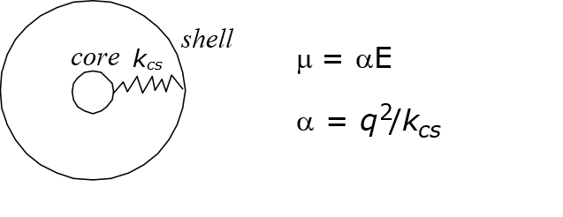

Core-shell model¶
Force field models normally assigned fixed partial charges centered at atoms, called the rigid ion model. This method cannot fully account for the polarisation effect, which arises due to local electric effect and will induce a dipole moment, \(\mu\).
One way to introduce polarisation effect is to use core-shell model. The model splits an atom into two particle components: positively charged core and negatively charged shell and they are connected by a harmonic spring with the force constant relates to the atomic polarisability, \(\alpha\).
{kind=link}
Charges are then redistributed to both components, while the vdw interactions apply only to the shell component of the atom. There is no electrostatic interaction between the components within the same atom.
DL_FIELD can define two types of core-shell model: (1) the dynamical (adiabatic) shell model, where a small fraction of mass is assigned to the shell, or (2) the relaxed (massless) shell model where shell components have no mass. Please consult DL_POLY manual for more details about the characteristics of these different models.

Core-shell model for organic systems
Core-shell models are usually implemented for inorganic models, for instance, on the oxygen atom of a mineral oxide. However, DL_FIELD uses a standard set of protocol on all FF schemes. All core-shell models must be implemented by using MOLECULE templates.
Example below shows a modified ethanol MOLECULE with core-shell model applied on the hydroxyl oxygen. This MOLECULE can be found in the ethanol.udff file in the Examples/ folder.
{kind=link}
The label ‘OZ’ is the shell part of the oxygen atom. Notice the CONNECT statement for the ATOM ‘O’ is only connected to ‘C2’ and ‘H’ but not ‘OZ’ since the CONNECT directive only applies to covalent bonds and ‘OZ’ is in fact part of ‘O’. However, a self-CONNECT statement is issued for ‘OZ’, while the SHELL statement indicates ‘O’ and ‘OZ’ form the core-shell entity.
The shell ‘particle’ must be defined as a new species as follows:
ATOM_TYPE key element mass remark
O_hydroxyl_shl OZ OZ 0.000 ! oxygen shell for ethanol_sh
O_hydroxyl_core O_cr O 15.9994 ! oxygen core for ethanol_sh
END ATOM_TYPE
MOLECULE_TYPE
ethanol ETOH 46.069 ethanol with auto-connect feature
ethanol_sh ESH 46.069 Core-shell version of ETOH
aliphatic_alcohol ROH 42.038 Alcohol
methanol MeOH 32.042 Redefine methanol with different charge
END MOLECULE_TYPE
Below shows the potential parameters for the core-shell species.
...
...
# For core shell model, inter-vdw interactions only affect the shell part.
VDW Eps Rmin/2 Eps_1-4 Rmin/2,1-4 Remark
O_cr 0.00 0.00 0.0 0.0 !
OZ -0.1521 1.7700 0.0 0.0 !
END VDW
SHELL
OZ O_cr 15.44 ! Core-shell spring constant for ethanol_sh
END SHELL
...
...
The SHELL directive specifies the spring constant, while the vdw parameters were assigned to the shell component only.
Below shows part of the input file, extracted from Examples/ethanol_shall.pdb, which highlights the core and shell of the oxygen atom.
...
...
ATOM 1 C2 ESH 1 0.995 0.329 -0.000 GRP1
ATOM 2 H21 ESH 1 1.844 -0.392 0.000 GRP1
ATOM 9 O1 ESH 1 -1.394 0.538 -0.000 GRP1
ATOM 3 H22 ESH 1 1.096 0.975 -0.902 GRP1
ATOM 4 H23 ESH 1 1.096 0.976 0.901 GRP1
ATOM 5 C1 ESH 1 -0.340 -0.404 0.000 GRP1
ATOM 6 H11 ESH 1 -0.456 -1.038 0.907 GRP1
ATOM 7 H12 ESH 1 -0.457 -1.039 -0.907 GRP1
ATOM 8 H ESH 1 -2.235 0.073 0.000 GRP1
ATOM 10 OZ ESH 1 -1.394 0.538 -0.000 GRP1
...
...
Note
Atoms can have arbitrary labels, or just element symbols. However, the shell part of an atom must always be described as the ATOM_KEY, which in this case, is the OZ.
Core-shell model for inorganic systems
Unlike the organic systems, DL_FIELD has the capability to automatically insert the shell part of an atom if this is available, depending on the MOLECULE template used.
For example, consider a simple xyz file consists of magnesium oxide (MgO), a binary oxide species:
24
MgO sample
# MOLECULE_KEY MO3 MOLECULE_GROUP A
O 0.000000 6.312000 0.000000
Mg 0.000000 0.000000 0.000000
O 0.000000 2.104000 0.000000
Mg 0.000000 4.208000 0.000000
O 2.104000 0.000000 0.000000
Mg 2.104000 2.104000 0.000000
O 2.104000 4.208000 0.000000
Mg 2.104000 6.312000 0.000000
...
...
From the input file, a rigid-ion model is being used (MOLECULE_KEY MO3). It is available from the library file, DLPOLY_INORGANIC_binary_oxide.sf.
If the MOLECULE_KEY is changed to ‘MO2’, which is a core-shall version for MgO, DL_FIELD will automatically insert the missing shells (or cores) if they are not available from the input file.